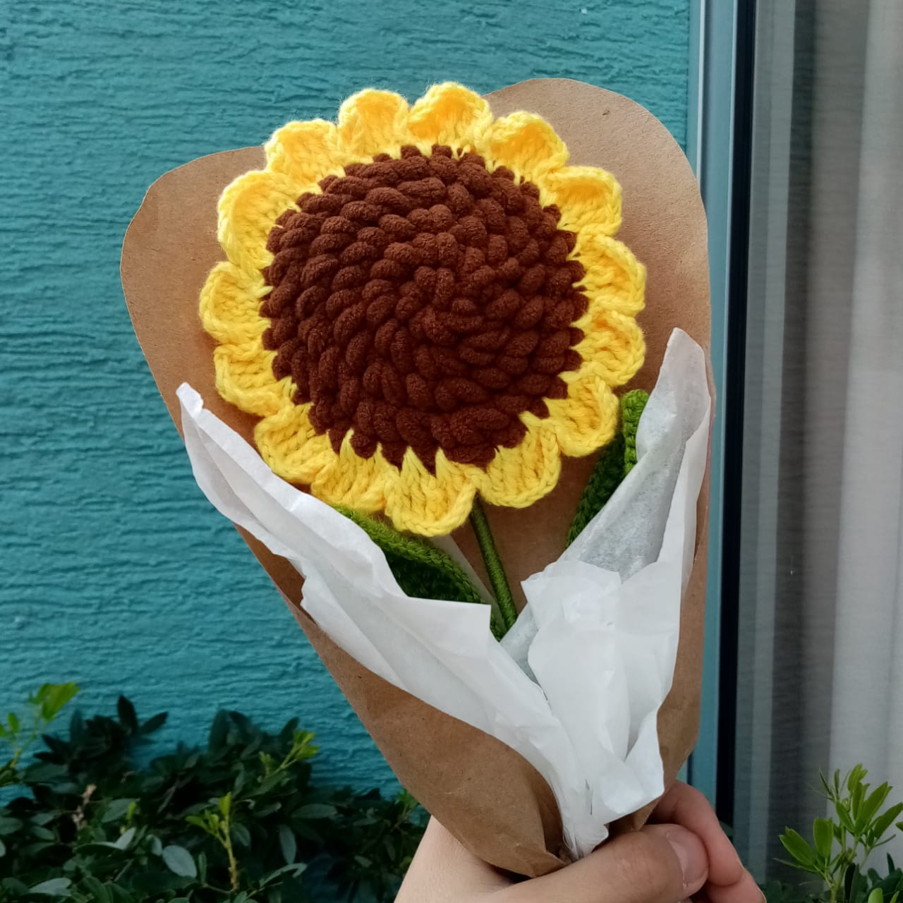

Nuestra Historia
Comenzamos siendo fruto de una idea que nacio a partir de la abuela y con nuestro espiritu emprendedor desidimos crear Sweet Marine, un emprendimiento con productos eschos totalmente a mano, productos artezanales y la mayoria siendo diceños propios.
Iniciamos el mes de mayo 2020 a desarrollar nuestra idea de
emprendimiento y venimos hasta la fecha con nuestras ideas de progreso
para Sweet Marine.
Nuestro Compromiso
Desde que iniciamos decidimos empezar con propuestas que ayuden al medio ambiente, empezamdo por utilizar materriales libres de crueldad animal y materiales para envíos 100% biodegradables y que ayudan al ecosistema.